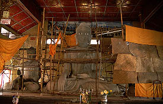
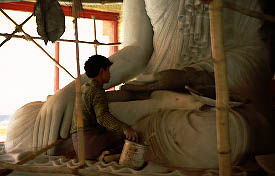
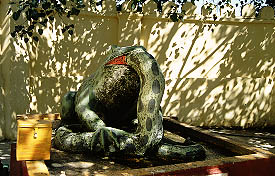
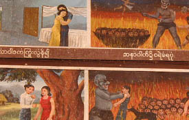
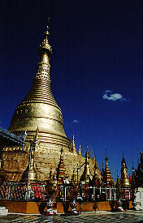
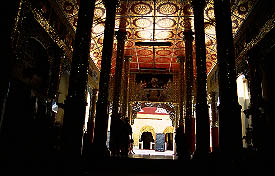
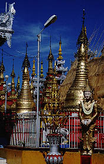
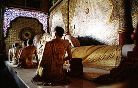
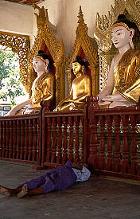

ShwemokhtawPagoda/PATHEIN
シュエモートーパゴダ
パセインの街の中心にあるパゴダ。まさにパセインを代表する立派なパゴダである。
 
1月は乾季。パゴダ改修のベストシーズンである。
ここの本尊様も年に一度のエステ中。このようなこまめなお肌のお手入れがお顔を美しく保つ秘訣なのは言うまでも無い。
 
何の寓話か知らないがカエルが蛇を飲んでました。今年は蛇年だというのに。
参道に並んだ土産屋、強い陽射しを反射させる金色の仏塔、電飾光背。ああ、ミャンマーに来たんだなあ、と実感する風景。
  
これは寝釈迦。で、こっちは人間。
次のパゴダへGO！
ミャンマーパゴダ列伝２のページへ
珍寺大道場 HOME